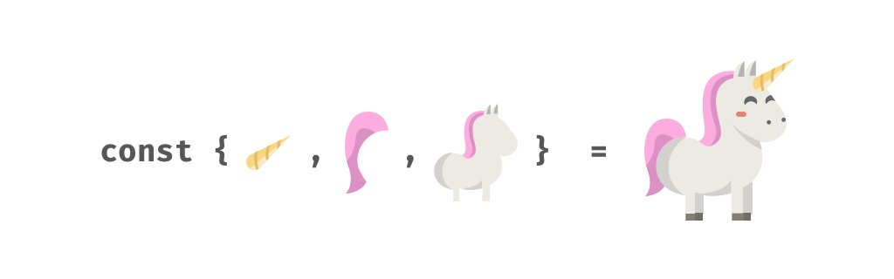

👩🏫 JS Intermédiaire 03 - Affectation par décomposition
Introduction
Dans cette quête, tu vas découvrir la déstructuration d'objets et de tableaux, une méthode bien pratique et très utilisée pour raccourcir le code.

🤓 À la fin de cette quête, tu comprendras:
✅ Qu'est-ce que la décomposition (destructuring) et comment l'utiliser
✅ Comment utiliser la syntaxe "rest" (...) dans la décomposition
🪓 Décomposer pour mieux régner
Objets
Des fois, il peut être pratique de déclarer des variables pointant une propriété d'un objet, comme ceci :
const product = { name: "socks", price: 5, color: "red" };
const name = product.name;
const price = product.price;
const color = product.color;
console.log(`Those ${color} ${name} cost ${price} euros`);
La décomposition permet de raccourcir ce code :
const product = { name: "socks", price: 5, color: "red" };
const { name, price, color } = product;
console.log(`Those ${color} ${name} cost ${price} euros`);
Ici, on déclare des variables avec le même nom que les clés de l'objet sur lequel on vient extraire les informations.
Tableaux
Ce code est bien trop verbeux :
const animals = ["Hubert", "Rosemary", "Paul"];
const hamster = animals[0];
const kiwi = animals[1];
const guineaFowl = animals[2];
console.log(hamster); // "Hubert"
console.log(kiwi); // "Rosemary"
console.log(guineaFowl); // "Paul"
Heureusement, la décomposition fonctionne également avec les tableaux ! Seule la syntaxe change :
const animals = ["Hubert", "Rosemary", "Paul"];
const [hamster, kiwi, guineaFowl] = animals;
console.log(hamster); // "Hubert"
console.log(kiwi); // "Rosemary"
console.log(guineaFowl); // "Paul"
La déstructuration de tableau crée automatiquement des variables qui correspondent à un ou plusieurs éléments d'un tableau. Dans cet exemple, tu peux voir que nous pouvons attribuer des variables (labels) spécifiques aux valeurs contenues dans les tableaux. le premier label entre les crochets désignera le premier élément du tableau, le deuxième désignera le second élément et ainsi de suite.
Essaie par toi même !
🔬 Expérience
Utilise la méthode de déstructuration pour créer des variables à partir d'un tableau.
https://codesandbox.io/s/destructuring-1-gq9d8
Montrer la solution|||javascript|||Problèmes pour trouver la solution ? |||0|||Cacher
const [apple, ananas, kiwi, avocado, cherry, strawberry] = fruits;
console.log(apple); // 🍏
console.log(ananas); // 🍍
☮️ syntaxe "rest"
Objets
Un exemple vaut plus que 1000 mots:
https://replit.com/@PierreGenthon/destructuring-rest-operator
Comme tu peux le voir, l'opérateur ... utilisé juste avant l'accolade fermante de la décomposition permet de désigner le reste des propriétés de l'objet.
Autrement dit, le nom de variable suivant les ... référencera un nouvel objet contenant les propriétés qui n'ont pas été citées dans les accolades de la décomposition.
Tableaux
L'opérateur "rest" (...) peut aussi symboliser ce qu'il reste d'un tableau. Par exemple, nous pourrions créer deux variables et ensuite une troisième qui contiendrait le reste du tableau :
const animals = ["Hubert", "Rosemary", "Paul", "Pierre"];
const [hamster, kiwi, ...others ] = animals;
console.log(hamster); // "Hubert"
console.log(kiwi); // "Rosemary"
console.log(others); // ["Paul", "Pierre"];
🔬 Expérience
Crée deux variables pour les deux premiers fruits et utilise l'opérateur rest pour les dernier.
https://codesandbox.io/s/spread-operator-36832
Montrer la solution|||javascript|||Problèmes pour trouver la solution ? |||0|||Cacher
const [apple, ananas, ...otherFruits] = fruits ;
console.log(pomme); // 🍏
console.log(ananas); // 🍍
console.log(otherFruits); // ["🥝", "🥑", "🍒", "🍓"]
La doc officielle où tu pourras en apprendre plus sur la décomposition